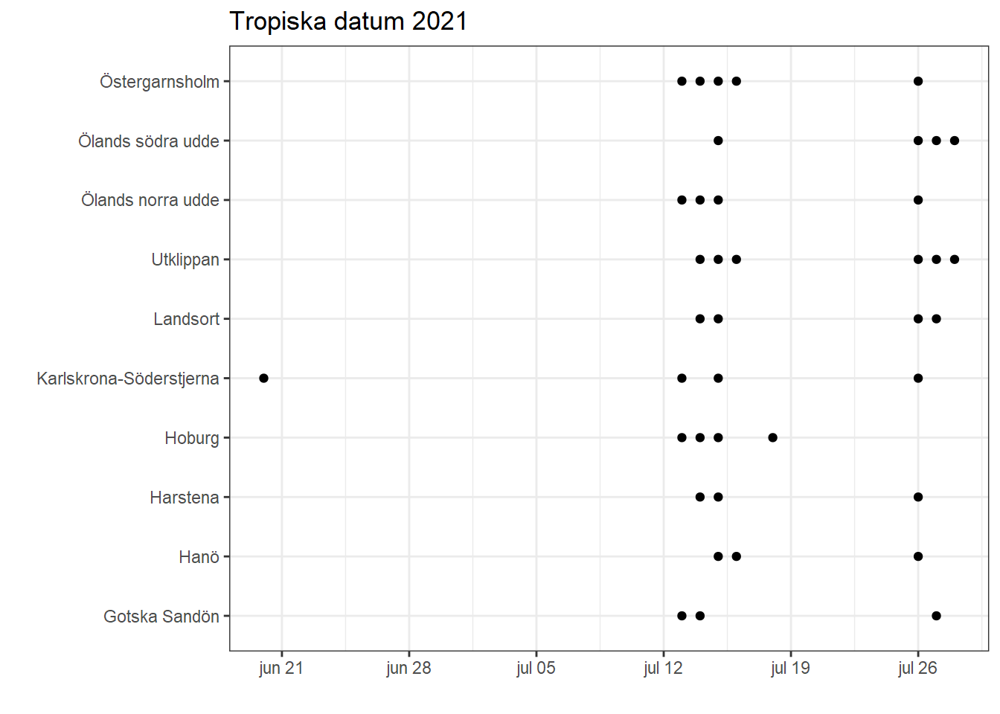
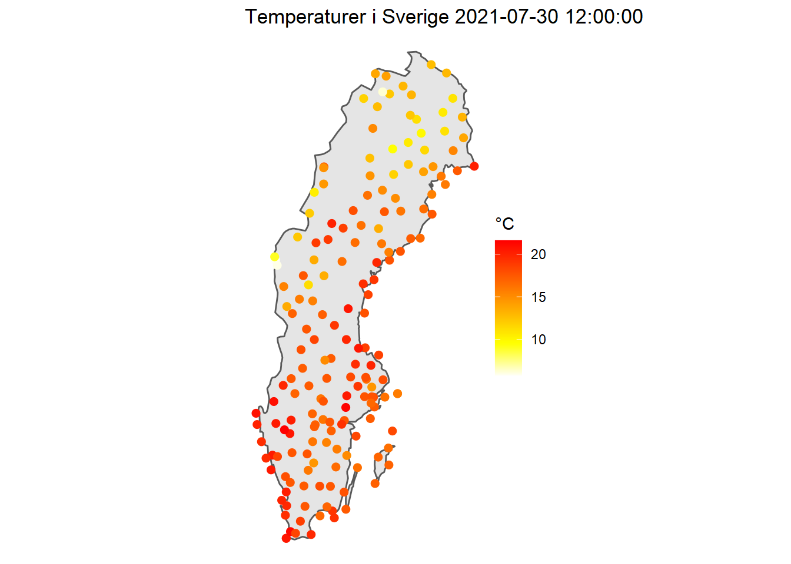
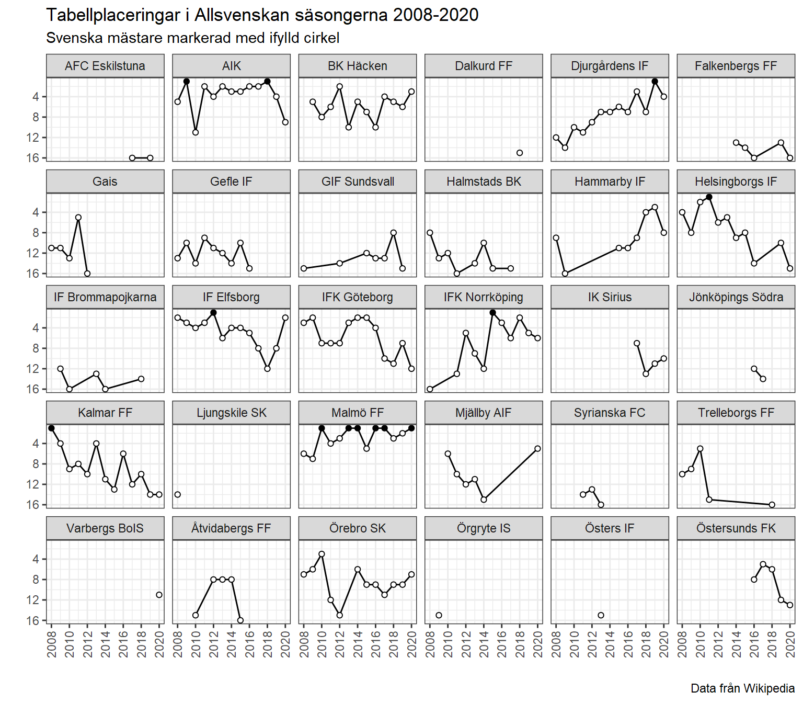

Laborationen består av två uppgifter med ett antal delfrågor och kamratgranskning. Lösningen skall presenteras i form av en källkodsfil laboration4.Rmd skriven i R Markdown med output: github_document tillsammans med en kompilerad version laboration4.md och tillhörande bilder/figurer. Använd ett kodblock (“R chunk”) per delfråga och fyll på med så mycket beskrivande text mellan kodblocken så att det går att följa vad som görs. Att skriva lättläst kod är en konst, men en god början är att följa en konsekvent stil som i The tidyverse style guide. Ta dig lite tid att läsa igenom delar som verkar relevanta, att följa reglerna i 2.2 är en bra början.
Arbetet skall utföras individuellt och samarbete, speciellt kopiering/delning av kurskamraters kod, är inte tillåtet. Det är inte heller tillåtet att ställa direkta frågor relaterade till problemen på forum som t.ex. Stack Overflow. Samtidigt uppmuntras ni att söka efter inspiration till lösningar baserat på redan ställda frågor på dylika forum. Tänk dock på att alltid redovisa källan.
Underlaget till laborationen finns tillgängligt på https://github.com/MT3003-ST21 som lab4_xxx där xxx är ditt användarnamn på GitHub. Hämta detta som ett projekt i RStudio Cloud på samma sätt som tidigare laborationer.
SMHI har ett öppet API på https://opendata-download-metobs.smhi.se/. I denna uppgift kommer vi använda väderdata, speciellt lufttemperatur. Ett exempelanrop ges av https://opendata-download-metobs.smhi.se/api/version/1.0/parameter/1/station/159880/period/latest-months/data.csv. Här anger parameter/1 att vi skall hämta parameter nr 1 (lufttemperatur), station/159880 att det är väderstation 159880 (Arvidsjaur) vi skall använda, period/latest-months att det är de senaste fyra månadernas data som skall hämtas och data.csv att resultatet skall ges i csv-format. Läs mer i APIets dokumentation.
get_temp <- function(station){ ... }som använder httr::GET för att anropa APIet, bearbetar resultatet och returnerar en tibble med kolumner station (stationsnummer), date, time och temp för de senaste fyra månaderna och angivet stationsnummer.APIets csv-format är lite stökigt, bland annat inleds den relevanta tabellen inte på samma radnummer för alla stationer. Därför rekommenderas formatet json, använd då httr::content(response, as = "text") %>% jsonlite::fromJSON() för att generera en lista som innehåller relevant tabell. Datumformatet i JSON-svaret ges i så kallad Unixtid, antalet millisekunder förflutna sedan midnatt 1 januari 1970. Detta kan konverteras till datetime med lubridate::as_datetime(date / 1000) ur vilken datum och tid kan extraheras med format(datetime, "%Y-%m-%d") respektive format(datetime, "%T").
Skriv en funktion tropical_dates <- function(station){ ... } som utnyttjar get_temp och returnerar en tabell med tropiska datum (datum då den uppmätta temperaturen inte understiger 20 grader) observerade på stationen de senaste månaderna. Ett datum skall endast räknas då det finns observerade värden för dygnets alla 24 timmar (se bonusvariant nedan).
Tropiska datum är vanligast längst kusten, använd tabellen stations och tropical_dates för att generera nedanstående figur (eventuellt kompletterad med nya datum).
stations <- tibble(station = c(55570, 78280, 68560, 65090, 87440, 77210, 66110, 89230, 64020, 87140),
name = c("Utklippan", "Östergarnsholm", "Hoburg", "Karlskrona-Söderstjerna",
"Landsort", "Ölands norra udde", "Ölands södra udde", "Gotska Sandön",
"Hanö", "Harstena"))
Bonus: I föregående två deluppgifter, ersätt tropiska datum med det vanligare begreppet tropiska nätter, där natten definieras som kl 20-08. Gör du denna variant behöver du inte redovisa tropiska datum.
Bonus: Genom att anropa APIet med https://opendata-download-metobs.smhi.se/api/version/1.0/parameter/1/station-set/all/period/latest-hour/data.csv får du en tabell över temperaturen den senaste timmen på de stationer det finns mätningar (du väljer själv csv eller json). Skriv en funktion plot_temp <- function(){ ... } som ritar aktuella temperaturer i en karta som nedan.
plot_temp() Som bakgrundskarta har jag använt
map <- rnaturalearth::ne_countries(country = "sweden", scale = "medium", returnclass = "sf")plottad med ggplot(map) + geom_sf() + geom_point(data = ....
Allsvenskans poängtabell för år XXXX kan hämtas på https://sv.wikipedia.org/wiki/Mall:Po%C3%A4ngtabell_f%C3%B6r_Fotbollsallsvenskan_XXXX.
read_allsvenskan <- function(year){ ... } som skrapar tabellen med rvest::read_html och genererar motsvarande nedanstående utskrift.library(rvest)
read_allsvenskan(2020)## # A tibble: 16 x 11
## Sasong Nr Lag S V O F GM IM MS P
## <dbl> <int> <chr> <int> <int> <int> <int> <int> <int> <int> <int>
## 1 2020 1 Malmö FF 30 17 9 4 64 30 34 60
## 2 2020 2 IF Elfsborg 30 12 15 3 49 38 11 51
## 3 2020 3 BK Häcken 30 12 13 5 45 29 16 49
## 4 2020 4 Djurgårdens IF 30 14 6 10 48 33 15 48
## 5 2020 5 Mjällby AIF 30 13 8 9 48 44 4 47
## 6 2020 6 IFK Norrköping 30 13 7 10 60 46 14 46
## 7 2020 7 Örebro SK 30 12 6 12 37 41 -4 42
## 8 2020 8 Hammarby IF 30 10 11 9 47 47 0 41
## 9 2020 9 AIK 30 10 9 11 30 33 -3 39
## 10 2020 10 IK Sirius 30 9 11 10 43 51 -8 38
## 11 2020 11 Varbergs BoIS 30 10 7 13 45 44 1 37
## 12 2020 12 IFK Göteborg 30 7 13 10 35 41 -6 34
## 13 2020 13 Östersunds FK 30 8 9 13 27 46 -19 33
## 14 2020 14 Kalmar FF 30 6 10 14 30 49 -19 28
## 15 2020 15 Helsingborgs IF 30 5 11 14 33 48 -15 26
## 16 2020 16 Falkenbergs FF 30 5 9 16 33 54 -21 24OBS: Kolumnnamnet Lag i Wikipedia-tabellen har fått en fotnot och blivit Lag[1] för 2018 och 2019, read_allsvenskan skall dock alltid generera samma kolumnnamn. Notera även att uppflyttade lag och regerande mästare har noteringar (U) respektive (GM) som skall tas bort från lagnamnet. Försöker du ta bort dessa med str_remove är det viktigt att använda “dubbel escape” (\\) framför specialtecken som parenteser.
Allsvenskans nuvarande format med 16 lag har funnits sedan 2008. Använd map_df med read_allsvenskan för att kombinera poängtabellerna 2008-2019 i en gemensam tabell. Illustrera deltagande lags genomsnittliga målskillnad per match över samtliga säsonger (S är antalet spelade matcher och MS = GM - IM är total målskillnad över en säsong).
Försök återskapa nedanstående figur så nära som möjligt.

När du fått tillgång till en kamrats inlämning:
laboration4.Rmd och kontrollera att den kompilerar (Knit) utan problem.